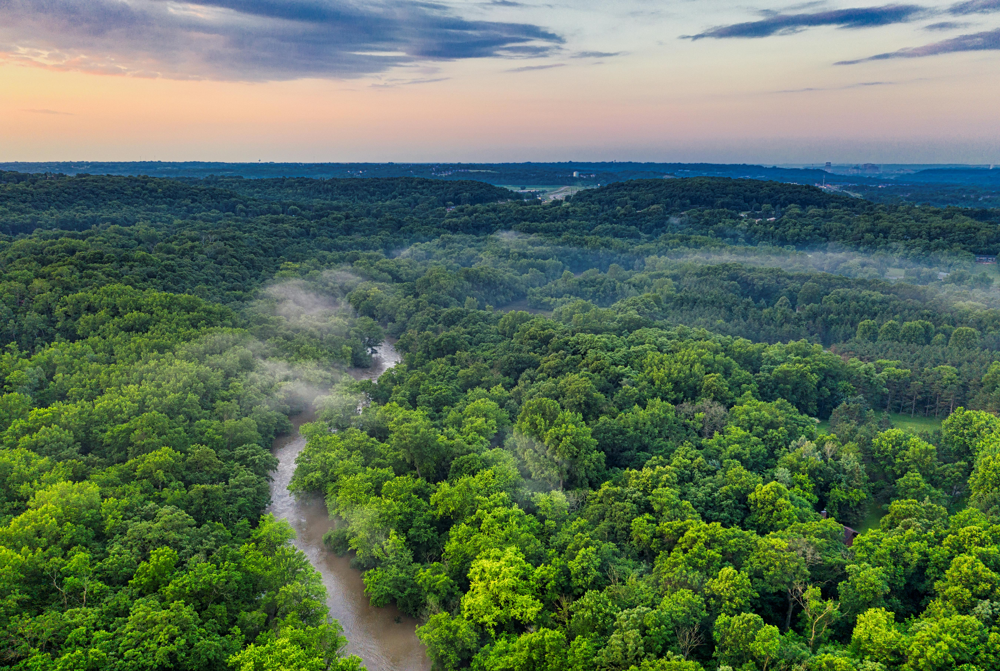
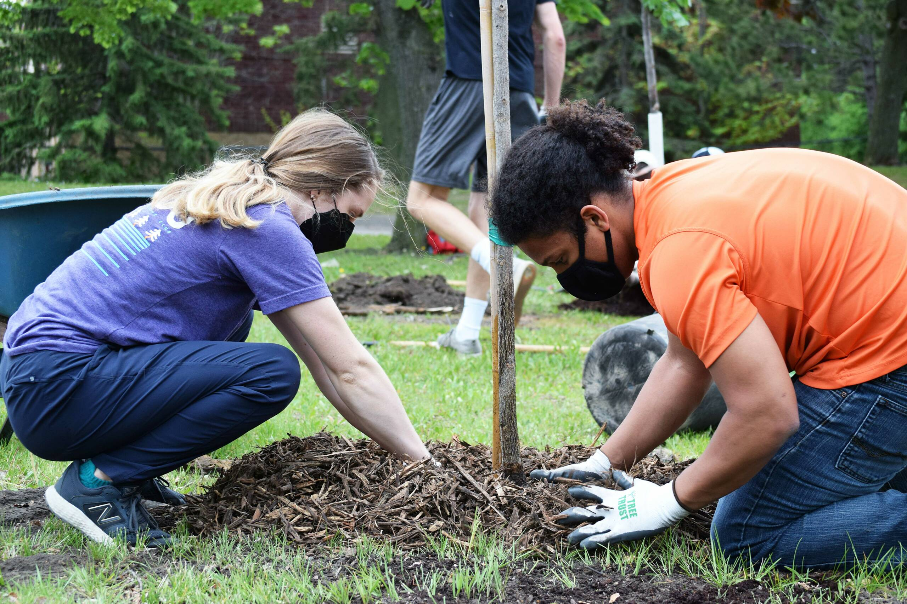
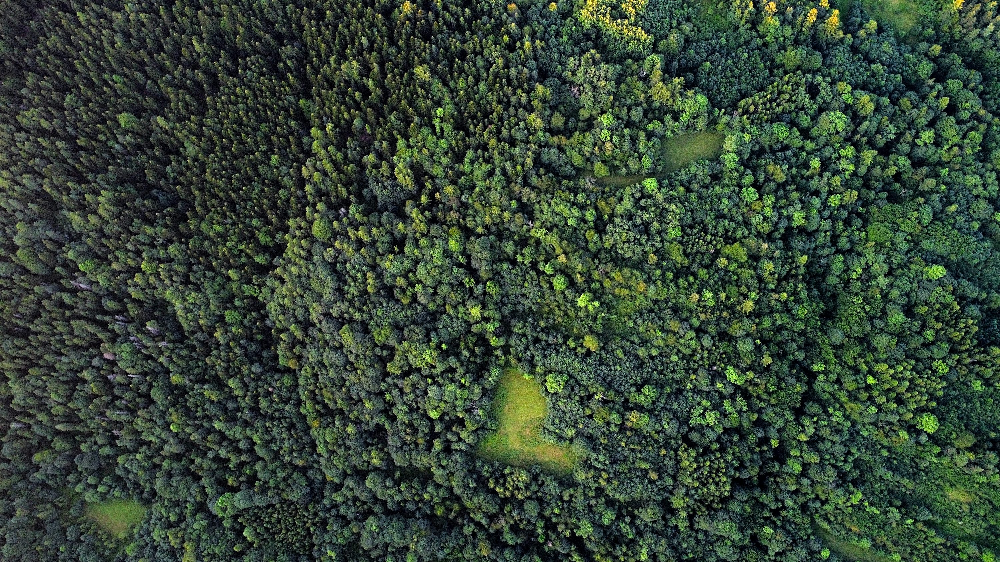

Empowering NGOs and communities to monitor reforestation projects with AI-powered satellite analysis.

In the fight against climate change, planting trees is only the first step. Ensuring their survival and measuring their impact is where technology meets nature. Ecotrace provides the tools to turn data into growth.
Trees Planted
NGOs Registered
Cities Covered
Acres Monitored
Explore our monitored plantation sites across the globe.
We use high-resolution satellite imagery and advanced machine learning algorithms to track vegetation health and green cover expansion over time.
Ecotrace combines satellite technology, AI analysis, and transparent reporting to monitor real environmental impact.
Compare before and after plantation growth using satellite imagery and AI-powered monitoring.
Track plantation coordinates, visualize project locations, and manage plantation zones easily.
Analyze greenery growth, plantation health, and vegetation density through intelligent detection.
NGOs and volunteer groups can manage plantation drives and monitor collective progress together.
Generate environmental reports including tree counts, carbon offset estimates, and green cover increase.
Upload plantation images and satellite datasets directly for long-term monitoring and validation.

